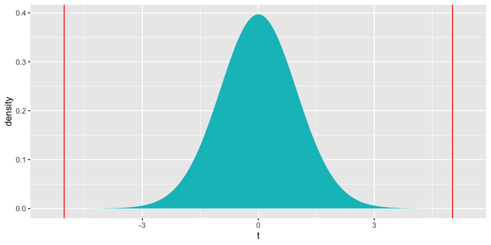
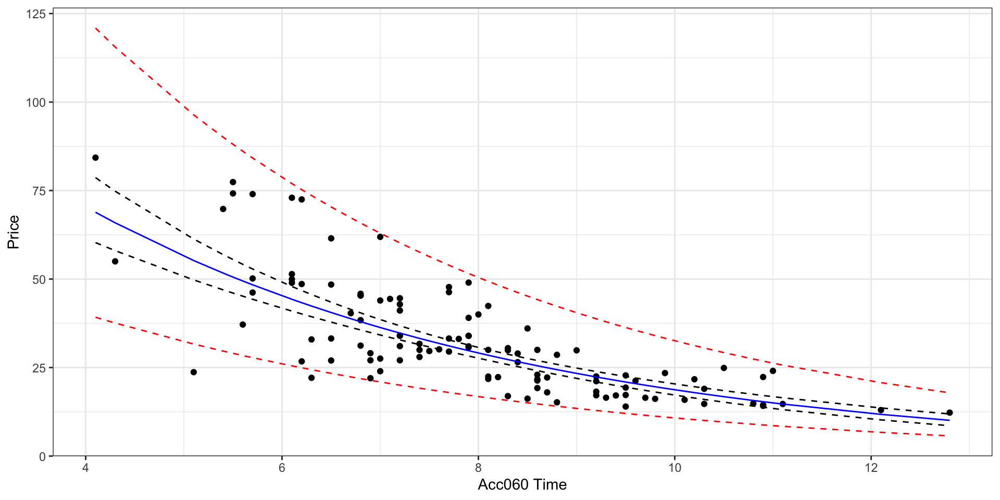
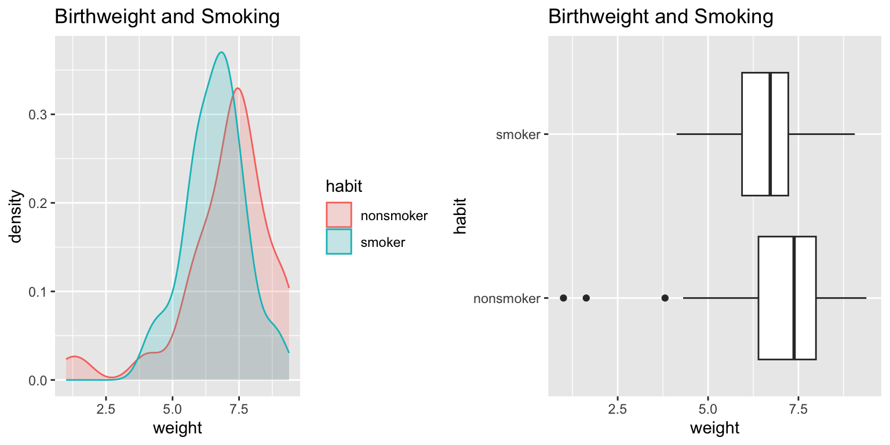

Chapter 5 Normal Error Regression Model
Learning Outcomes:
Explain when it is appropriate to use “theory-based†standard error formulas.
Interpret estimates, standard errors, test statistics, and p-values resulting from linear model output in R.
List the assumptions made in the normal error regression model.
Calculate p-values corresponding to t-statistics and F-statistics in R.
Interpret confidence intervals for an expected response, and prediction intervals, and distinguish between these two types of intervals.
Assess the whether linear model assumptions are reasonably satisfied, using residual plots, histograms, and normal QQ plots.
Explain when we should or should not expect p-values and confidence intervals obtained via “theory-based†approaches to agree with those obtained via simulation.
Identify situations where a log transformation of the response variable is appropriate.
Calculate predicted values for models involving a log transformation of the response variable.
Interpret regression coefficients in models involving a log transformation of the response variable.
Explain the regression effect.
5.1 The Normal Error Regression Model
5.1.1 Example: Ice Cream Dispensor

Suppose an ice cream machine is manufacturered to dispense 2 oz. of ice cream per second, on average. If each person using the machine got exactly 2 oz. per second, the relationship between time and amount dispensed would look like this:
In reality, however, the actual amount dispensed each time it is used will vary due to unknown factors like:
- force applied to dispensor
- temperature
- build-up of ice cream
- other unknown factors
Thus, the data will actually look like this:

5.1.2 Signal and Noise
We assume that there are two components that contribute to our response variable \(Y_i\). These are:
A function that relates the expected (or average) value of \(Y\) to explanatory variables \(X_1, X_2, \ldots{X_p}\). That is, \(E(Y_i)= f(X_{i1}, X_{i2}, \ldots, X_{ip})\). This function is often assumed to be linear, that is \(E(Y_i)= \beta_0 + \beta_1X_{i1} + \beta_2X_{i2}+ \ldots+ \beta_pX_{ip}\)
Random, unexplained, variability that results in an individual response \(Y_i\) differing from \(E(Y_i)\).
The first component is often referred to as signal. The second is referred to as noise.
5.1.3 Normal Distribution
In a linear regression model, we assume individual response values \(Y_i\) deviate from their expectation, according to a normal distribution.
A normal distribution is defined by two parameters:
- \(\mu\) representing the center of the distribution
- \(\sigma\) representing the standard deviation
This distribution is denoted \(\mathcal{N}(\mu, \sigma)\).
Note that for standard deviation \(\sigma\), \(\sigma^2\) is called the variance. Some books denote the normal distribution as \(\mathcal{N}(\mu, \sigma^2)\), instead of \(\mathcal{N}(\mu,\sigma)\).
5.1.4 Signal and Noise in Icecream Example
In this example, I simulated the amount of ice cream dispensed by adding a random number from a normal distribution with mean 0 and standard deviation 0.5 to the expected amount dispensed, which is given by \(2x\), where \(x\) represents time pressing the dispenser.
Thus, amount dispensed for person \(i\) is given by
\[Y_i = 2x_i+\epsilon_i, \text{ where } \epsilon_i\sim\mathcal{N}(0, 0.5) \]
set.seed(10082020)
time <- c(1, 1.2, 1.5, 1.8, 2.1, 2.1, 2.3, 2.5, 2.6, 2.8, 2.9, 2.9, 3.1, 3.2, 3.6)
signal <- 2*time
noise <-rnorm(15, 0, 0.5)
amount <- 2*time + noise
Icecream <- data.frame(time, signal, noise, amount)
kable(head(Icecream))| time | signal | noise | amount |
|---|---|---|---|
| 1.0 | 2.0 | 0.2318223 | 2.231822 |
| 1.2 | 2.4 | -0.4895681 | 1.910432 |
| 1.5 | 3.0 | 0.5815205 | 3.581520 |
| 1.8 | 3.6 | -0.0318453 | 3.568155 |
| 2.1 | 4.2 | 0.1716097 | 4.371610 |
| 2.1 | 4.2 | -0.9288076 | 3.271192 |
5.1.5 What We Actually Get to See
In reality, we do not see the signal and noise columns, we only see time and amount. From this, we need to estimate signal, without being thrown off by noise.
ggplot(data=Icecream1, aes(x=time, y=amount)) + geom_point() + ggtitle("Icecream Dispensed") + xlab("Time Pressing Dispensor") + ylab("Amount Dispensed")The red line represents the “true†relationship between time and average amount dispensed.
The blue line represents the least squares regression line, fit from the data. The blue line is an approximation of the red line.
ggplot(data=Icecream1, aes(x=time, y=amount)) + geom_point() + ggtitle("Icecream Dispensed") + xlab("Time Pressing Dispensor") + ylab("Amount Dispensed") + stat_smooth(method="lm", se=FALSE) + geom_abline(slope=2, intercept=0, color="red") +
annotate("text", label="y=2x", x= 3.5, y=6.5, size=10, color="red")
5.1.6 IceCream Model From Simulated Data
##
## Call:
## lm(formula = lm(amount ~ time), data = Icecream1)
##
## Residuals:
## Min 1Q Median 3Q Max
## -0.8645 -0.3553 0.0685 0.2252 0.6963
##
## Coefficients:
## Estimate Std. Error t value Pr(>|t|)
## (Intercept) -0.1299 0.3968 -0.327 0.749
## time 2.0312 0.1598 12.714 0.0000000104 ***
## ---
## Signif. codes: 0 '***' 0.001 '**' 0.01 '*' 0.05 '.' 0.1 ' ' 1
##
## Residual standard error: 0.4527 on 13 degrees of freedom
## Multiple R-squared: 0.9256, Adjusted R-squared: 0.9198
## F-statistic: 161.6 on 1 and 13 DF, p-value: 0.000000010425.1.7 Mathematical Form of Normal Error Regression Model
The mathematical form of a normal error linear regression model is
\(Y_i = \beta_0 + \beta_1X_{i1}+ \ldots + \beta_pX_{ip} + \epsilon_i\), with \(\epsilon_i\sim\mathcal{N}(0,\sigma)\).
Note that in place of \(X_{ip}\), we could have indicators for categories, or functions of \(X_{ip}\), such as \(X_{ip}^2\), \(\text{log}(X_{ip})\), or \(\text{sin}(X_{ip})\).
5.1.8 Parameters and Statistics
We call the quantities \(\beta_0, \beta_1, \ldots, \beta_p\) parameters. They pertain to the true but unknown data generating mechanism.
We call the estimates \(b_0, b_1, \ldots, b_p\), statistics. They are calculated from our observed data.
We use confidence intervals and hypothesis tests make statements about parameters, based on information provided by statistics.
In reality, data almost never truly come from normal distributions, but the normal distributions are often useful in approximating real data distributions.
As statistician George Box said, “All models are wrong, but some are useful.”
5.2 Inference in Normal Error Regression Model
5.2.1 Distribution of \(t= \frac{{b_j}}{\text{SE}(b_j)}\)
We’ve already seen that we can use t-distributions to perform inference on regression model parameters (\(b_j\)’s)when sample sizes are large enough.
When our data can reasonably be assumed to follow a normal error regression model, then we can use these t-distributions regardless of sample size.
Important Fact: If \(Y_i = \beta_0 + \beta_1X_{i1}+ \ldots + \beta_pX_{ip} + \epsilon_i\), with \(\epsilon_i\sim\mathcal{N}(0,\sigma)\), then
\[ t= \frac{{b_j}}{\text{SE}(b_j)} \]
follows a t-distribution.
Confidence Interval for \(\beta_j\)
A 95% confidence interval for \(\beta_j\) is given by
\(b_j \pm t^*\left({\text{SE}(b_j)}\right)\),
where \(t^*\) is chosen to achieve the desired confidence level.
- For a 95% confidence interval, use \(t^*=2\).
Hypothesis test for \(\beta_j=0\)
- If \(Y_i = \beta_0 + \beta_1X_{i1}+ \ldots + \beta_pX_{ip} + \epsilon_i\), with \(\epsilon_i\sim\mathcal{N}(0,\sigma)\), then a test statistic for the null hypothesis: \(\beta_j = 0\) is given by:
\[ t=\frac{{b_j}}{\text{SE}(b_j)}, \]
and calculate a p-value using a t-distribution.
5.2.2 F-Distribution
An [F distribution] is a right-skewed distribution. It is defined by two parameters, \(\nu_1, \nu_2\), called numerator and denominator degrees of freedom.

5.2.3 Distribution of F-Statistic
If \(Y_i = \beta_0 + \beta_1X_{i1} + \beta_2{X_i2} + \ldots + \beta_qX_{iq} + \epsilon_i\), with \(\epsilon_i\sim\mathcal{N}(0,\sigma)\),
and \(Y_i = \beta_0 + \beta_1X_{i1} + \beta_2{X_i2} + \ldots + \beta_qX_{iq} + \beta_{q+1}X_{i{q+1}} \ldots + \beta_pX_{ip}+ \epsilon_i\), is another proposed model, then
\[ F=\frac{\frac{\text{Unexplained Variability in Reduced Model}-\text{Unexplained Variability in Full Model}}{p-q}}{\frac{\text{Unexplained Variability in Full Model}}{n-(p+1)}} \]
follows an F-distribution.
5.2.4 Bear Weight by Season
Recall Bear Weights by Season

##
## Call:
## lm(formula = Weight ~ Season, data = Bears_Subset)
##
## Residuals:
## Min 1Q Median 3Q Max
## -178.84 -79.84 -29.02 54.98 309.16
##
## Coefficients:
## Estimate Std. Error t value Pr(>|t|)
## (Intercept) 204.84 17.16 11.939 <0.0000000000000002 ***
## SeasonSpring -37.27 34.62 -1.076 0.284
## SeasonSummer -29.81 24.71 -1.206 0.231
## ---
## Signif. codes: 0 '***' 0.001 '**' 0.01 '*' 0.05 '.' 0.1 ' ' 1
##
## Residual standard error: 112.5 on 94 degrees of freedom
## Multiple R-squared: 0.02034, Adjusted R-squared: -0.0005074
## F-statistic: 0.9757 on 2 and 94 DF, p-value: 0.3807## Df Sum Sq Mean Sq F value Pr(>F)
## Season 2 24699 12350 0.976 0.381
## Residuals 94 1189818 126585.2.5 Bears F-Test Illustration
ts=0.976
gf_dist("f", df1=2, df2=94, geom = "area", fill = ~ (abs(x)< abs(ts)), show.legend=FALSE) + geom_vline(xintercept=c(ts), color="red") + xlab("t") p-value:
p-value:
## [1] 0.38060075.2.6 Comparison to Simulation

## [1] 0.3762The p-value we obtained is very similar to the one we obtained using the simulation-based test.
In this case, even though we had concerns about normality, they did not have much impact on the p-value from the F-distribution. The F-test is fairly robust to minor departures from normality.
5.3 Intervals for Predicted Values
5.3.1 Estimation and Prediction
Recall the icecream dispensor that is known to dispense icecream at a rate of 2 oz. per second on average, with individual amounts varying according to a normal distribution with mean 0 and standard deviation 0.5
Consider the following two questions:
On average, how much icecream will be dispensed for people who press the dispensor for 1.5 seconds?
If a single person presses the dispensor for 1.5 seconds, how much icecream will be dispensed?
The first question is one of estimation. The second pertains to prediction.
5.3.2 Uncertainty in Estimation and Prediction
In estimation and prediction, we must think about two sources of variability.
- We are using data to estimate \(\beta_0\) and \(\beta_1\), which introduces sampling variability.
- Even if we did know \(\beta_0\) and \(\beta_1\), there is variability in individual observations, which follows a \(\mathcal{N}(0, \sigma)\) distribution.
In an estimation problem, we only need to think about (1). When predicting the value of a single new observation, we need to think about both (1) and (2).
Thus, intervals for predictions of individual observations carry more uncertainty and are wider than confidence intervals for \(E(Y|X)\).

5.3.3 Estimation in IC Example
| time | 1.00 | 1.20 | 1.50 | 1.80 | 2.10 | 2.10 | 2.30 | 2.50 | 2.60 | 2.80 | 2.90 | 2.90 | 3.1 | 3.20 | 3.60 |
| amount | 2.23 | 1.91 | 3.58 | 3.57 | 4.37 | 3.27 | 4.65 | 4.63 | 4.74 | 5.77 | 5.21 | 5.92 | 6.2 | 7.07 | 7.25 |
ggplot(data=Icecream1, aes(x=time, y=amount)) + geom_point() + ggtitle("Icecream Dispensed") + xlab("Time Pressing Dispensor") + ylab("Amount Dispensed") 
In the estimation setting, we are trying o determine the location of the regression line for the entire population.
Uncertainty comes from the fact that we only have data from a sample.
5.3.4 Estimation in IC Example
| time | 1.00 | 1.20 | 1.50 | 1.80 | 2.10 | 2.10 | 2.30 | 2.50 | 2.60 | 2.80 | 2.90 | 2.90 | 3.1 | 3.20 | 3.60 |
| amount | 2.23 | 1.91 | 3.58 | 3.57 | 4.37 | 3.27 | 4.65 | 4.63 | 4.74 | 5.77 | 5.21 | 5.92 | 6.2 | 7.07 | 7.25 |
ggplot(data=Icecream1, aes(x=time, y=amount)) + geom_point() + ggtitle("Icecream Dispensed") + xlab("Time Pressing Dispensor") + ylab("Amount Dispensed") + geom_abline(slope=2, intercept=0, color="red") + stat_smooth(method="lm")
5.3.5 Recall Ice Cream Model Output
##
## Call:
## lm(formula = lm(amount ~ time), data = Icecream1)
##
## Residuals:
## Min 1Q Median 3Q Max
## -0.8645 -0.3553 0.0685 0.2252 0.6963
##
## Coefficients:
## Estimate Std. Error t value Pr(>|t|)
## (Intercept) -0.1299 0.3968 -0.327 0.749
## time 2.0312 0.1598 12.714 0.0000000104 ***
## ---
## Signif. codes: 0 '***' 0.001 '**' 0.01 '*' 0.05 '.' 0.1 ' ' 1
##
## Residual standard error: 0.4527 on 13 degrees of freedom
## Multiple R-squared: 0.9256, Adjusted R-squared: 0.9198
## F-statistic: 161.6 on 1 and 13 DF, p-value: 0.000000010425.3.6 Estimation in SLR
The first question:
“On average, how much icecream will be dispensed for people who press the dispensor for 1.5 seconds?”
is a question of estimation. It is of the form, for a given \(X\), on average what do we expect to be true of \(Y\).
In the ice cream question, we can answer this exactly, since we know \(\beta_0\) and \(\beta_1\).
In a real situation, we don’t know these and have to estimate them from the data, which introduces uncertainty.
Confidence interval for \(E(Y | (X=x))\):
\[ \begin{aligned} & b_0+b_1x^* \pm t^*SE(\hat{Y}|X=x^*) \\ & b_0+b_1x^* \pm t^*\sqrt{\widehat{Var}(\hat{Y}|X=x^*)} \end{aligned} \]
The second question is a question of prediction. Even if we knew the true values of \(beta_0\) and \(\beta_1\), we would not be able to given the exact amount dispensed for an individual user, since this varies between users.
Prediction interval for \(E(Y | (X=x))\):
\[ \begin{aligned} & b_0+b_1x^* \pm t^*\sqrt{\widehat{Var}(\hat{Y}|X=x^*) + s^2} \end{aligned} \] The extra \(s^2\) in the calculation of prediction variance comes from the uncertainty associated with individual observations.
5.3.7 Confidence Interval in R
## fit lwr upr
## 1 2.916965 2.523728 3.310201We are 95% confident that the mean amount of ice cream dispensed when the dispensor is held for 1.5 seconds is between 2.52 and 3.31 oz.
5.3.8 Prediction Interval in R
## fit lwr upr
## 1 2.916965 1.862832 3.971097We are 95% confident that in individual who holds the dispensor for 1.5 seconds will get between 1.86 and 3.97 oz of ice cream.
5.3.9 Confidence and Prediction Intervals

The prediction interval (in red) is wider than the confidence interval (in blue), since it must account for variability between individuals, in addition to sampling variability.

5.3.11 Calculations (Optional)
In simple linear regression,
\[ \begin{aligned} SE(\hat{Y}|X=x^*) = \sqrt{\frac{1}{n}+ \frac{(x^*-\bar{x})^2}{\displaystyle\sum_{i=1}^n(x_i-\bar{x})^2}} \end{aligned} \]
Thus a confidence interval for \(E(Y | (X=x))\) is:
\[ \begin{aligned} & b_0+b_1x^* \pm t^*SE(\hat{Y}|X=x^*) \\ & = b_0+b_1x^* \pm 2s\sqrt{\frac{1}{n}+ \frac{(x^*-\bar{x})^2}{\displaystyle\sum_{i=1}^n(x_i-\bar{x})^2}} \ \end{aligned} \]
A prediction interval for \(E(Y | (X=x))\) is:
\[\beta_0 + \beta_1x^* \pm t^* s\sqrt{\left(\frac{1}{n}+ \frac{(x^*-\bar{x})^2}{\displaystyle\sum_{i=1}^n(x_i-\bar{x})^2}\right) + 1} \]
Calculations in Icecream example
For \(x=1.5\), a confidence interval is:
\[ \begin{aligned} & b_0+b_1x^* \pm t^*SE(\hat{Y}|X=x^*) \\ & = b_0+b_1x^* \pm 2s\sqrt{\frac{1}{n}+ \frac{(x^*-\bar{x})^2}{\displaystyle\sum_{i=1}^n(x_i-\bar{x})^2}} \\ & = -0.1299087 + 2.0312489 \pm 20.4527185 \sqrt{\frac{1}{15}+ \frac{(1.5-2.3733)^2}{8.02933}} \end{aligned} \]
A prediction interval is:
\[ \begin{aligned} & b_0+b_1x^* \pm t^*SE(\hat{Y}|X=x^*) \\ & = b_0+b_1x^* \pm 2s\sqrt{\frac{1}{n}+ \frac{(x^*-\bar{x})^2}{\displaystyle\sum_{i=1}^n(x_i-\bar{x})^2}} \\ & = -0.1299087 + 2.0312489 \pm 20.4527185 \sqrt{\left(\frac{1}{15}+ \frac{(1.5-2.3733)^2}{8.02933}\right)+1} \end{aligned} \]
5.3.12 Intervals in Cars Model
What is a reasonable range for the average price of all new 2015 cars that can accelerate from 0 to 60 mph in 7 seconds?
If a car I am looking to buy can accelerate from 0 to 60 mph in 7 seconds, what price range should I expect?
5.3.13 Cars Confidence Interval
What is a reasonable range for the average price of all new 2015 cars that can accelerate from 0 to 60 mph in 7 seconds?
## fit lwr upr
## 1 39.5502 37.21856 41.88184We are 95% confident that the average price of new 2015 cars that accelerate from 0 to 60 mph in 7 seconds is between 37.2 and 41.9 thousand dollars.
Note: this is a confidence interval for \(\beta_0 -7\beta_1\).
5.3.14 Cars Prediction Interval
If a car I am looking to buy can accelerate from 0 to 60 mph in 7 seconds, what price range should I expect?
## fit lwr upr
## 1 39.5502 18.19826 60.90215We are 95% confident that a single new 2015 car that accelerates from 0 to 60 mph in 7 seconds will cost between 18.2 and 60.9 thousand dollars.

5.3.16 Lakes Questions of Interest
Calculate an interval that we are 95% confident contains the mean mercury concentration for all lakes in Northern Florida. Do the same for Southern Florida.
Calculate an interval that we are 95% confident contains the mean mercury concentration for an individual lake in Northern Florida. Do the same for a lake in Southern Florida.
5.3.17 Lakes Confidence Interval
## fit lwr upr
## 1 0.4245455 0.3137408 0.5353501
## 2 0.6965000 0.5541689 0.8388311We are 95% confident that the mean mercury level in North Florida is between 0.31 and 0.54 ppm.
We are 95% confident that the mean mercury level in South Florida is between 0.55 and 0.84 ppm.
Note: these are confidence intervals for \(\beta_0\), and \(\beta_0 + \beta_1\), respectively.
5.3.18 Lakes Prediction Interval
## fit lwr upr
## 1 0.4245455 -0.22155101 1.070642
## 2 0.6965000 0.04425685 1.348743We are 95% confident that an individual lake in North Florida will have mercury level between 0 and 1.07 ppm.
We are 95% confident that the mean mercury level in South Florida is between 0.04 and 1.35 ppm.
Note that the normality assumption, which allows for negative mercury levels leads to a somewhat nonsensical result.
5.4 Regression Model Assumptions
5.4.1 What We’re Assuming
Let’s think carefully about what we are assuming in order to use the hypothesis tests and confidence intervals provided in R.
The statement \(Y_i = \beta_0 + \beta_1X_{i1}+ \ldots + \beta_pX_{ip} + \epsilon_i\), with \(\epsilon_i\sim\mathcal{N}(0,\sigma)\) implies the following:
Linearity: the expected value of \(Y\) is a linear function of \(X_1, X_2, \ldots, X_p\).
Normality: Given the values of \(X_1, X_2, \ldots, X_p\), \(Y\) follows a normal distribution.
Constant Variance: Regardless of the values of \(X_1, X_2, \ldots, X_p\), the variance (or standard deviation) in the normal distribution for \(Y\) is the same.
Independence: each observation is independent of the rest.
5.4.2 Illustration of Model Assumptions
We know that these assumptions held true in the ice cream example, because we generated the data in a way that was consistent with these.
In practice, we will have only the data, without knowing the exact mechanism that produced it. We should only rely on the t-distribution based p-values and confidence intervals in the R output if these appear to be reasonable assumptions.
Of course, these assumptions will almost never be truly satisfied, but they should at least be a reasonable approximation if we are to draw meaningful conclusions.
5.4.3 Checking Model Assumptions
The following plots are useful when assessing the appropriateness of the normal error regression model.
Scatterplot of residuals against predicted values
Histogram of standardized residuals
- heavy skewness indicates a problem with normality assumption
Normal quantile plot
- severe departures from diagonal line indicate problem with normality assumption
5.4.4 Residual vs Predicted Plots
Useful for detecting issues with the linearity or constant variance assumption.
- curvature indicates a problem with linearity assumption
- “funnel†or “megaphone†shape indicates problem with constant variance assumption
P1 <- ggplot(data=Violations, aes(y=no_viol_Model$residuals, x=no_viol_Model$fitted.values)) + geom_point() + ggtitle("No Violation") + xlab("Predicted Values") + ylab("Residuals")
P2 <- ggplot(data=Violations, aes(y=lin_viol_Model$residuals, x=no_viol_Model$fitted.values)) + geom_point() + ggtitle("Violation of Linearity Assumption")+ xlab("Predicted Values") + ylab("Residuals")
P3 <- ggplot(data=Violations, aes(y=cvar_viol_Model$residuals, x=no_viol_Model$fitted.values)) + geom_point() + ggtitle("Violation of Constant Variance Assumption")+ xlab("Predicted Values") + ylab("Residuals")
grid.arrange(P1, P2, P3, ncol=3)
If there is only one explanatory variable, plotting the residuals against that variable reveals the same information.
5.4.5 Histogram of Residuals
Useful for assessing normality assumption.
- Severe skewness indicates violation of normality assumption
P1 <- ggplot(data=Violations, aes(x=no_viol_Model$residuals)) + geom_histogram() + ggtitle("No Violation") +xlab("Residual")
P2 <- ggplot(data=Violations, aes(x=norm_viol_Model$residuals)) + geom_histogram() + ggtitle("Violation of Normality Assumption") + xlab("Residual")
grid.arrange(P1, P2, ncol=2)5.4.6 Normal Quantile-Quantile (QQ) Plot
Sometimes histograms can be inconclusive, especially when sample size is smaller.
A Normal quantile-quantile plot displays quantiles of the residuals against the expected quantiles of a normal distribution.
- Severe departures from diagonal line indicate a problem with normality assumption.
P1 <- ggplot(data=Violations, aes(sample = scale(no_viol_Model$residuals))) + stat_qq() + stat_qq_line() + xlab("Normal Quantiles") + ylab("Residual Quantiles") + ggtitle("No Violation") + xlim(c(-4,4)) + ylim(c(-4,4))
P2 <- ggplot(data=Violations, aes(sample = scale(norm_viol_Model$residuals))) + stat_qq() + stat_qq_line() + xlab("Normal Quantiles") + ylab("Residual Quantiles") + ggtitle("Violation of Normality Assumption") + xlim(c(-4,4)) + ylim(c(-4,4))
grid.arrange(P1, P2, ncol=2)5.4.7 Checking Model Assumptions - Independence
Independence is often difficult to assess through plots of data, but it is important to think about whether there were factors in the data collection that would cause some observations to be more highly correlated than others.
For example:
- People in the study who are related.
- Some plants grown in the same greenhouse and others in different greenhouses.
- Some observations taken in same time period and others at different times.
All of these require more complicated models that account for correlation using spatial and time structure.
5.4.8 Summary of Checks for Model Assumptions
| Model assumption | How to detect violation |
|---|---|
| Linearity | Curvature in residual plot |
| Constant Variance | Funnel shape in residual plot |
| Normality | Skewness in histogram of residuals or departure from diag. line in QQ plot |
| Independence | No graphical check, carefully examine data collection |
5.4.9 Impact of Model Assumption Violations
| Model assumption | Impact |
|---|---|
| Linearity | predictions and intervals unreliable |
| Constant Variance | predictions still reliable; some intervals will be too wide and others too narrow, prediction intervals heavily affected, confidence intervals may be affected, especially when sample size is small |
| Normality | predictions still reliable; intervals will be symmetric when they shouldn’t be , prediction intervals heavily affected, confidence intervals may be affected, especially when sample size is small |
| Independence | predictions unreliable and intervals unreliable |
5.4.10 Cars Model Assumptions
Recall the regression line estimating the relationship between a car’s price and acceleration time.
This line was calculated using a sample of 110 cars, released in 2015.
\(\text{Price}_i = \beta_0 + \beta_1\times\text{Acc. Time}_i + \epsilon_i\), where \(\epsilon_i\sim\mathcal{N}(0, \sigma)\).
The model assumes:
Linearity: the expected price of a car is a linear function of its acceleration time.
Normality: for any given acceleration time, the prices of actual cars follow a normal distribution. For example the distribution of prices for all cars that accelerate from 0 to 60 in 8 seconds is normal, and so is the distribution of prices of cars that accelerate from 0 to 60 in 10 seconds (though these normal distributions have different means.)
Constant Variance: the normal distribution for prices is the same for all acceleration times.
Independence: no two cars are any more alike than any others.
We should only use the p-values and confidence intervals provided by R, which depend on the t-distribution approximation, if we believe these assumptions are reasonable.
5.4.11 Cars Assumptions Check
P1 <- ggplot(data=Cars2015, aes(y=Cars_M_A060$residuals, x=Cars_M_A060$fitted.values)) + geom_point() + ggtitle("Cars Model Residual Plot") + xlab("Predicted Values") + ylab("Residuals")
P2 <- ggplot(data=Cars2015, aes(x=Cars_M_A060$residuals)) + geom_histogram() + ggtitle("Histogram of Residuals") + xlab("Residual")
P3 <- ggplot(data=Cars2015, aes(sample = scale(Cars_M_A060$residuals))) + stat_qq() + stat_qq_line() + xlab("Normal Quantiles") + ylab("Residual Quantiles") + ggtitle("Cars Model QQ Plot")
grid.arrange(P1, P2, P3, ncol=3)There is a funnel-shape in the residual plot, indicating a concern about the constant variance assumption. There appears to be more variability in prices for more expensive cars than for cheaper cars. There is also some concern about the normality assumption, as the histogram and QQ plot indicate right-skew in the residuals.
Since the sample size is large and the violations aren’t too severe, these concerns probably won’t have much impact on tests and confidence intervals associated with the slope and intercept of the regression line, but they will likely lead to unreliable prediction intervals.
5.4.12 Model for Mercury Florida Lakes
Recall our sample of 53 Florida Lakes, 33 in the north, and 20 in the south.
\(\text{Mercury}_i = \beta_0 + \beta_1\times\text{I}_{\text{South}_i} + \epsilon_i\), where \(\epsilon_i\sim\mathcal{N}(0, \sigma)\).

5.4.13 Lakes Model Assumptions
Linearity: there is an expected mercury concentration for lakes in North Florida, and another for lakes in South Florida.
Normality: mercury concentrations of individual lakes in the north are normally distributed, and so are mercury concentrations in the south. These normal distributions might have different means.
Constant Variance: the normal distribution for mercury concentrations in North Florida has the same standard deviation as the normal distribution for mercury concentrations in South Florida
Independence: no two lakes are any more alike than any others. We might have concerns about this, do to some lakes being geographically closer to each other than others.
We should only use the p-values and confidence intervals provided by R, which depend on the t-distribution approximation, if we believe these assumptions are reasonable.
5.4.14 Lakes Assumptions Check
P1 <- ggplot(data=FloridaLakes, aes(y=Lakes_M$residuals, x=Lakes_M$fitted.values)) + geom_point() + ggtitle("Lakes Model Residual Plot") + xlab("Predicted Values") + ylab("Residuals")
P2 <- ggplot(data=FloridaLakes, aes(x=Lakes_M$residuals)) + geom_histogram() + ggtitle("Lakes of Residuals") + xlab("Residual")
P3 <- ggplot(data=FloridaLakes, aes(sample = scale(Lakes_M$residuals))) + stat_qq() + stat_qq_line() + xlab("Normal Quantiles") + ylab("Residual Quantiles") + ggtitle("Lakes Model QQ Plot")
grid.arrange(P1, P2, P3, ncol=3)Notice that we see two lines of predicted values and residuals. This makes sense since all lakes in North Florida will have the same predicted value, as will all lakes in Southern Florida.
There appears to be a little more variability in residuals for Southern Florida (on the right), than Northern Florida, causing some concern about the constant variance assumption.
Overall, though, the assumptions seem mostly reasonable.
We shouldn’t be concerned about using theory-based hypothesis tests or confidence intervals for the mean mercury level or difference in mean mercury levels. There might be some concern that prediction intervals could be either too wide or too narrow, but this is not a major concern, since the constant variance assumption is not severe.
5.4.15 General Comments on Model Assumptions
We shouldn’t think about model assumptions being satisfied as a yes/no question.
In reality assumptions are never perfectly satisfied, so it’s a question of how severe violations must be in order to impact results. This is context dependent.
A model might be reasonable for certain purposes (i.e. confidence interval for \(\beta_1\)) but not for others (i.e. prediction of response value for new observation).
When model assumptions are a concern, consider a using a transformation of the data or a more flexible technique, such as a nonparametric method or statistical machine learning algorithm. We’ll talk more about these soon.
Remember that all statistical techniques are approximations
5.5 Transformations
5.5.1 Cars Assumptions Check
P1 <- ggplot(data=Cars2015, aes(y=Cars_M_A060$residuals, x=Cars_M_A060$fitted.values)) + geom_point() + ggtitle("Cars Model Residual Plot") + xlab("Predicted Values") + ylab("Residuals")
P2 <- ggplot(data=Cars2015, aes(x=Cars_M_A060$residuals)) + geom_histogram() + ggtitle("Histogram of Residuals") + xlab("Residual")
P3 <- ggplot(data=Cars2015, aes(sample = scale(Cars_M_A060$residuals))) + stat_qq() + stat_qq_line() + xlab("Normal Quantiles") + ylab("Residual Quantiles") + ggtitle("Cars Model QQ Plot")
grid.arrange(P1, P2, P3, ncol=3)
There is a funnel-shape in the residual plot, indicating a concern about the constant variance assumption. There appears to be more variability in prices for more expensive cars than for cheaper cars. There is also some concern about the normality assumption, as the histogram and QQ plot indicate right-skew in the residuals.
5.5.2 Confidence Interval for \(\beta_1\) in Cars Example
## 2.5 % 97.5 %
## (Intercept) 79.888995 99.918163
## Acc060 -8.429027 -5.957651We are 95% confident that the average price of a new 2015 car decreases between 8.43 and 5.96 thousand dollars for each additional second it takes to accelerate from 0 to 60 mph.
Bootstrap Confidence Interval for \(\beta_1\):
q.025 <- quantile(Cars_Bootstrap_Results_Acc060$b1, 0.025)
q.975 <- quantile(Cars_Bootstrap_Results_Acc060$b1, 0.975)
c(q.025, q.975)## 2.5% 97.5%
## -8.797594 -5.696359The bootstrap confidence interval is slightly wider than the one based on the t-approximation.
This difference can be attributed to the questions about the constant variance and normality assumptions.
5.5.3 Confidence and Prediction Intervals
## fit lwr upr
## 1 39.5502 37.21856 41.88184## fit lwr upr
## 1 17.97018 14.71565 21.22472We are 95% confident that the mean price for all cars that can accelerate from 0 to 60 mph in 7 seconds is between 37.2 and 41.9 thousand dollars.
We are 95% confident that the mean price for all cars that can accelerate from 0 to 60 mph in 10 seconds is between 14.7 and 22.2 thousand dollars.
5.5.4 Prediction Intervals for Expected Price Given Acc060
## fit lwr upr
## 1 39.5502 18.19826 60.90215## fit lwr upr
## 1 17.97018 -3.502148 39.44252We are 95% confident that a single car that can accelerate from 0 to 60 mph in 7 seconds will cost between 18.2 thousand and 60.9 thousand dollars.
We are 95% confident that a single car that can accelerate from 0 to 60 mph in 10 seconds will cost between 0 thousand and 39.4 thousand dollars.

5.5.6 Concerns about Intervals and Model Assumptions
The confidence and prediction intervals for cars that take 7 and 10 seconds to accelerate have similar widths. This seems inconsistent with the data, which showed more variability about prices for more expensive cars than less expensive ones.
- The intervals are computed using same value for \(s\), which is a result of the constant variance assumption. Our residual plot showed us this assumption might not be valid in this situation.The confidence and prediction intervals are symmetric about the expected price, even though the distribution of residuals was right-skewed. - This is the result of the normality assumption, which our histogram and QQ-plot showed might not be valid here.
Since we had concerns about the model assumptions, the intervals might not be reliable. We saw that the confidence interval for \(\beta_1\) differed somewhat, but not terribly, from the one produced via Bootstrap. It is harder to tell the degree to which the confidence and prediction intervals for price for a given acceleration time might be off, but we should treat these with caution.
5.5.7 Modeling Log Price
When residual plots yield model inadequacy, we might try to correct these by applying a transformation to the response variable.
When working a nonnegative, right-skewed response variable, it is often helpful to work with the logarithm of the response variable.
Note: In R, log() denotes the natural (base e) logarithm, often denoted ln(). We can actually use any logarithm, but the natural logarithm is commonly used.
5.5.9 Model for Log Transform
##
## Call:
## lm(formula = log(LowPrice) ~ Acc060, data = Cars2015)
##
## Residuals:
## Min 1Q Median 3Q Max
## -0.84587 -0.19396 0.00908 0.18615 0.53350
##
## Coefficients:
## Estimate Std. Error t value Pr(>|t|)
## (Intercept) 5.13682 0.13021 39.45 <0.0000000000000002 ***
## Acc060 -0.22064 0.01607 -13.73 <0.0000000000000002 ***
## ---
## Signif. codes: 0 '***' 0.001 '**' 0.01 '*' 0.05 '.' 0.1 ' ' 1
##
## Residual standard error: 0.276 on 108 degrees of freedom
## Multiple R-squared: 0.6359, Adjusted R-squared: 0.6325
## F-statistic: 188.6 on 1 and 108 DF, p-value: < 0.000000000000000225.5.10 LogPrice Model: What We’re Assuming
Linearity: the log of expected price of a car is a linear function of its acceleration time.
Normality: for any given acceleration time, the log of prices of actual cars follow a normal distribution.
Constant Variance: the normal distribution for log of price is the same for all acceleration times.
Independence: no two cars are any more alike than any others.
We should only use the p-values and confidence intervals provided by R, which depend on the t-distribution approximation, if we believe these assumptions are reasonable.
5.5.11 Model Assumption Check for Transformed Model
P1 <- ggplot(data=Cars2015, aes(y=Cars_M_Log$residuals, x=Cars_M_Log$fitted.values)) + geom_point() + ggtitle("Cars Log Model Residual Plot") + xlab("Predicted Values") + ylab("Residuals")
P2 <- ggplot(data=Cars2015, aes(x=Cars_M_Log$residuals)) + geom_histogram() + ggtitle("Histogram of Residuals") + xlab("Residual")
P3 <- ggplot(data=Cars2015, aes(sample = scale(Cars_M_Log$residuals))) + stat_qq() + stat_qq_line() + xlab("Normal Quantiles") + ylab("Residual Quantiles") + ggtitle("Cars Model QQ Plot")
grid.arrange(P1, P2, P3, ncol=3)
There is still some concern about constant variance, though perhaps not as much. The normality assumption appears more reasonable.
5.5.12 Model for Log of Car Price
\[ \widehat{\text{Log Price}} = b_0 + b_1\times \text{Acc060} \]
Thus
\[ \begin{aligned} \widehat{\text{Price}} & = e^{b_0 + b_1\times \text{Acc060} } \\ & e^{b_0}e^{b_1 \times \text{Acc060}} \\ & e^{b_0}(e^{b_1})^\text{Acc060} \end{aligned} \]
5.5.13 Log Model Predictions
Prediction Equation:
\[ \begin{aligned} \widehat{\text{Price}} & = e^{5.13582}e^{-0.22064 \times \text{Acc060}} \end{aligned} \]
Predicted price for car that takes 7 seconds to accelerate:
\[ \begin{aligned} \widehat{\text{Price}} & = e^{5.13582}e^{-0.22064 \times \text{7}} = 36.3 \end{aligned} \]
Predicted price for car that takes 10 seconds to accelerate:
\[ \begin{aligned} \widehat{\text{Price}} & = e^{5.13582}e^{-0.22064 \times \text{10}}= 18.7 \end{aligned} \]
Predictions are for log(Price), so we need to exponentiate.
## 1
## 3.592343## 1
## 36.31908A car that accelerates from 0 to 60 mph in 7 seconds is expected to cost 36.3 thousand dollars.
5.5.14 Log Model Interpretations
\[ \begin{aligned} \widehat{\text{Price}} & = e^{b_0 + b_1\times \text{Acc060} } \\ & e^{b_0}e^{b_1 \times \text{Acc060}} \\ & e^{b_0}(e^{b_1})^\text{Acc060} \end{aligned} \]
\(e^{b_0}\) is theoretically the expected price of a car that can accelerate from 0 to 60 mph in no time, but this is not a meaningful interpretation.
For each additional second it takes a car to accelerate, price is expected to multiply by a factor of \(e^{b_1}\).
For each additional second in acceleration time, price is expected to multiply by a a factor of \(e^{-0.22} = 0.80\). Thus, each 1-second increase in acceleration time is estimated to be associated with a 20% drop in price, on average.
5.5.15 Log Model CI for \(\beta_0\), \(\beta_1\)
## 2.5 % 97.5 %
## (Intercept) 4.8787105 5.3949208
## Acc060 -0.2524862 -0.1887916- We are 95% confident that the price of a car changes, on average, by multiplicative factor between \(e^{-0.252} = 0.7773\) and \(e^{-0.189}=0.828\) for each additional second in acceleration time. That is, we believe the price decreases between 17% and 23% on average for each additional second in acceleration time.
5.5.16 Log Model CI for Expected Response
## fit lwr upr
## 1 3.592343 3.53225 3.652436## fit lwr upr
## 1 36.31908 34.20083 38.56852We are 95% confident that the mean price amoung all cars that accelerate from 0 to 60 mph in 7 seconds is between \(e^{3.53225} =34.2\) and \(e^{3.652436}=38.6\) thousand dollars.
5.5.17 Log Model Prediction Interval
## fit lwr upr
## 1 3.592343 3.042041 4.142645## fit lwr upr
## 1 36.31908 20.94796 62.96917We are 95% confident that the expected price for a car that accelerates from 0 to 60 mph in 7 seconds is between \(e^{3.04} =20.9\) and \(e^{4.14}=63.9\) thousand dollars.
5.5.18 Confidence Interval Comparison
95% Confidence interval for average price of cars that take 7 seconds to accelerate:
Original Model:
## fit lwr upr
## 1 39.5502 37.21856 41.88184Transformed Model:
## fit lwr upr
## 1 36.31908 34.20083 38.568525.5.19 Prediction Interval Comparison
95% Prediction interval for price of an individual car that takes 7 seconds to accelerate:
Original Model:
## fit lwr upr
## 1 39.5502 18.19826 60.90215Transformed Model:
## fit lwr upr
## 1 36.31908 20.94796 62.96917Notice that the transformed interval is not symmetric and allows for a longer “tail†on the right than the left.
5.5.20 Log Model Visualization

The log model suggests an nonlinear trend in price with respect to acceleration time and gives wider confidence and prediction intervals for cars that accelerate faster and tend to be more expensive. It also gives non-symmetric intervals. These results appear to be consistent with the observed data.
5.6 Responsible Statistical Inference
5.6.1 Statistical Significance vs Practical Importance
- “(S)cientists have embraced and even avidly pursued meaningless differences solely because they are statistically significant, and have ignored important effects because they failed to pass the screen of statistical significance…It is a safe bet that people have suffered or died because scientists (and editors, regulators, journalists and others) have used significance tests to interpret results, and have consequently failed to identify the most beneficial courses of action.†-ASA statement on p-values, 2016
5.6.2 What a p-value tells us
Performing responsible statistical inference requires understanding what p-values do and do not tell us, and how they should and should not be interpreted.
A low p-value tells us that the data we observed are inconsistent with our null hypothesis or some assumption we make in our model.
A large p-value tells us that the data we observed could have plausibly been obtained under our supposed model and null hypothesis.
A p-value never provides evidence supporting the null hypothesis, it only tells us the strength of evidence against it.
A p-value is impacted by
- the size of the difference between group, or change per unit increase (effect size)
- the amount of variability in the data
- the sample size
- the size of the difference between group, or change per unit increase (effect size)
Sometimes, a p-value tells us more about sample size, than relationship we’re actually interested in.
A p-value does not tell us the “size†of a difference or effect, or whether it is practically meaningful.
5.6.3 Flights from New York to Chicago
A travelor lives in New York and wants to fly to Chicago. They consider flying out of two New York airports:
- Newark (EWR)
- LaGuardia (LGA)
We have data on the times of flights from both airports to Chicago’s O’Hare airport from 2013 (more than 14,000 flights).
Assuming these flights represent a random sample of all flights from these airports to Chicago, consider how the traveler might use this information to decide which airport to fly out of.
library(nycflights13)
data(flights)
flights$origin <- as.factor(flights$origin)
flights$dest <- as.factor(flights$dest)We’ll create a dataset containing only flights from Newark and Laguardia to O’Hare, and only the variables we’re interested in.
5.6.4 Visualizing New York to Chicago Flights
p1 <- ggplot(data=Flights_NY_CHI, aes(x=air_time, fill=origin, color=origin)) + geom_density(alpha=0.2) + ggtitle("Flight Time")
p2 <- ggplot(data=Flights_NY_CHI, aes(x=air_time, y=origin)) + geom_boxplot() + ggtitle("Flight Time")
grid.arrange(p1, p2, ncol=2)
library(knitr)
T <- Flights_NY_CHI %>% group_by(origin) %>%
summarize(Mean_Airtime = mean(air_time, na.rm=TRUE),
SD = sd(air_time, na.rm=TRUE), n=sum(!is.na(air_time)))
kable(T)| origin | Mean_Airtime | SD | n |
|---|---|---|---|
| EWR | 113.2603 | 9.987122 | 5828 |
| LGA | 115.7998 | 9.865270 | 8507 |
Question: If you were flying from New York to Chicago, would this information influence which airport you would fly out of? If so, which would you be more likely to choose?
5.6.5 Model for Airlines Data
##
## Call:
## lm(formula = air_time ~ origin, data = Flights_NY_CHI)
##
## Residuals:
## Min 1Q Median 3Q Max
## -26.26 -7.26 -1.26 5.20 84.74
##
## Coefficients:
## Estimate Std. Error t value Pr(>|t|)
## (Intercept) 113.2603 0.1299 872.06 <0.0000000000000002 ***
## originLGA 2.5395 0.1686 15.06 <0.0000000000000002 ***
## ---
## Signif. codes: 0 '***' 0.001 '**' 0.01 '*' 0.05 '.' 0.1 ' ' 1
##
## Residual standard error: 9.915 on 14333 degrees of freedom
## (622 observations deleted due to missingness)
## Multiple R-squared: 0.01558, Adjusted R-squared: 0.01551
## F-statistic: 226.9 on 1 and 14333 DF, p-value: < 0.000000000000000225.6.6 Confidence Interval for Flights
## 2.5 % 97.5 %
## (Intercept) 113.00572 113.514871
## originLGA 2.20905 2.869984Flights from LGA are estimated to take 2.5 minutes longer than flights from EWR on average.
The very low p-value provides strong evidence of a difference in mean flight time.
We are 95% confident that flights from LGA to ORD take between 2.2 and 2.9 minutes longer, on average, than flights from EWR to ORD.
5.6.7 Flights Conclusions?
Although we have a low p-value, indicating a discernable difference, the size of this difference (2-3 minutes in airtime) is very small. A travelor would most likely have other, more important considerations when deciding which airport to fly from.
The low p-value is due to the very large sample size, rather than the size of the difference.
Note: there is also some question about whether it is appropriate to use a hypothesis test or confidence interval here at all. We have data on all flights in 2013, so one could argue that we have the entire population already. Perhaps, we could view this as a sample and generalize to flights in other years, though conditions change, so it is not clear that these flights from 2013 would be representative of flights in other years.
5.6.8 Smoking and Birthweight Example
We consider data on the relationship between a pregnant mother’s smoking and the birthweight of the baby. Data come from a sample of 80 babies born in North Carolina in 2004. Thirty of the mothers were smokers, and fifty were nonsmokers.
p1 <- ggplot(data=NCBirths, aes(x=weight, fill=habit, color=habit)) + geom_density(alpha=0.2) + ggtitle("Birthweight and Smoking")
p2 <- ggplot(data=NCBirths, aes(x=weight, y=habit)) + geom_boxplot() + ggtitle("Birthweight and Smoking")
grid.arrange(p1, p2, ncol=2)library(knitr)
T <- NCBirths %>% group_by(habit) %>% summarize(Mean_Weight = mean(weight), SD = sd(weight), n=n())
kable(T)| habit | Mean_Weight | SD | n |
|---|---|---|---|
| nonsmoker | 7.039200 | 1.709388 | 50 |
| smoker | 6.616333 | 1.106418 | 30 |
5.6.9 Model for Birthweight
##
## Call:
## lm(formula = weight ~ habit, data = NCBirths)
##
## Residuals:
## Min 1Q Median 3Q Max
## -6.0392 -0.6763 0.2372 0.8280 2.4437
##
## Coefficients:
## Estimate Std. Error t value Pr(>|t|)
## (Intercept) 7.0392 0.2140 32.89 <0.0000000000000002 ***
## habitsmoker -0.4229 0.3495 -1.21 0.23
## ---
## Signif. codes: 0 '***' 0.001 '**' 0.01 '*' 0.05 '.' 0.1 ' ' 1
##
## Residual standard error: 1.514 on 78 degrees of freedom
## Multiple R-squared: 0.01842, Adjusted R-squared: 0.005834
## F-statistic: 1.464 on 1 and 78 DF, p-value: 0.235.6.10 Conclusions from Birthweight Data
## 2.5 % 97.5 %
## (Intercept) 6.613070 7.4653303
## habitsmoker -1.118735 0.2730012The average birtweight of babies whose mothers are smokers is estimated to be about 0.42 lbs less than the average birthweight for babies whose mothers are nonsmokers.
The large p-value of 0.23, tells us that there is not enough evidence to say that a mother’s smoking is associated with lower birthweights. It is plausible that this difference could have occurred by chance.
We are 95% confident that the average birtweight of babies whose mothers are smokers is between 1.12 lbs less and 0.27 lbs more than the average birthweight for babies whose mothers are nonsmokers.
Question: Many studies have shown that a mother’s smoking puts a baby at risk of low birthweight. Do our results contradict this research? Should we conclude that smoking has no impact on birthweights?
5.6.11 Impact of Small Sample Size
Notice that we observed a difference of about 0.4 lbs. in mean birthweight, which is a considerable difference.
The large p-value is mosty due to the relatively small sample size. Even though we observed a mean difference of 0.4 lbs, the sample is to small to allow us to say conclusively that smoking is associated with lower birthweights.
This is very different from concluding that smoking does not impact birthweight.
This is an example of why we should never “accept the null hypothesis†or say that our data “support the null hypothesis.”
5.6.12 Larger Dataset
In fact, this sample of 80 babies is part of a larger dataset, consisting of 1,000 babies born in NC in 2004. When we consider the full dataset, notice that the difference between the groups is similar, but the p-value is much smaller, providing stronger evidence of a relationship between a mother’s smoking and lower birthweight.
##
## Call:
## lm(formula = weight ~ habit, data = ncbirths)
##
## Residuals:
## Min 1Q Median 3Q Max
## -6.1443 -0.7043 0.1657 0.9157 4.6057
##
## Coefficients:
## Estimate Std. Error t value Pr(>|t|)
## (Intercept) 7.14427 0.05086 140.472 <0.0000000000000002 ***
## habitsmoker -0.31554 0.14321 -2.203 0.0278 *
## ---
## Signif. codes: 0 '***' 0.001 '**' 0.01 '*' 0.05 '.' 0.1 ' ' 1
##
## Residual standard error: 1.503 on 997 degrees of freedom
## (1 observation deleted due to missingness)
## Multiple R-squared: 0.004846, Adjusted R-squared: 0.003848
## F-statistic: 4.855 on 1 and 997 DF, p-value: 0.027795.6.13 Cautions and Advice
p-values are only (a small) part of a statistical analysis.
- For small samples, real differences might not be statistically significant.
-Don’t accept null hypothesis. Gather more information.
- For large, even very small differences will be statistically significant.
-Look at confidence interval. Is difference practically important?
- When many hypotheses are tested at once (such as many food items) some will produce a significant result just by change.
-Use a multiple testing correction, such as Bonferroni
- Interpret p-values on a “sliding scale”
- 0.049 is practically the same as 0.051
- Is sample representative of larger population?
- Were treatments randomly assigned (for experiments)?
- Are there other variables to consider?
5.7 The Regression Effect
5.7.1 The Regression Effect
Exam 1 vs Exam 2 scores for intro stat students at another college

What is the relationship between scores on the two exams?
5.7.2 The Regression Effect
Exam 1 vs Exam 2 scores for intro stat students at another college

How many of the 6 students who scored below 70 on Exam 1 improved their scores on Exam 2?
How many of the 7 students who scored above 90 improved on Exam 2?
5.7.3 The Regression Effect
A low score on an exam is often the result of both poor preparation and bad luck.
A high score often results from both good preparation and good luck.
While changes in study habits and preparation likely explain some improvement in low scores, we would also expect the lowest performers to improve simply because of better luck.
Likewise, some of the highest performers may simply not be as lucky on exam 2, so a small dropoff should not be interpreted as weaker understanding of the exam material.
5.7.4 Simulating Regression Effect
set.seed(110322018)
Understanding <-rnorm(25, 80, 10)
Score1 <- Understanding + rnorm(25, 0, 5)
Score2 <- Understanding + rnorm(25, 0, 5)
Understanding <- round(Understanding,0)
TestSim <- data.frame(Understanding, Score1, Score2)
ggplot(data=TestSim, aes(y=Score2, x=Score1))+ geom_point() + stat_smooth(method="lm") +
geom_abline(slope=1) + geom_text(aes(label=Understanding), vjust = 0, nudge_y = 0.5)This phenomon is called the regression effect.
5.7.5 Test Scores Simulation - Highest Scores
| Understanding | Score1 | Score2 |
|---|---|---|
| 97 | 98.86412 | 93.60285 |
| 89 | 98.57157 | 88.25851 |
| 94 | 97.23330 | 92.65175 |
| 91 | 93.92857 | 98.23312 |
| 85 | 93.66503 | 88.70963 |
| 93 | 92.06243 | 88.67015 |
These students’ success on test 1 is due to a strong understanding and good luck. We would expect the understanding to carry over to test 2 (provided the student continues to study in a similar way), but not necessarily the luck.
5.7.6 Test Scores Simulation - Lowest Scores
| Understanding | Score1 | Score2 |
|---|---|---|
| 58 | 54.44354 | 50.30597 |
| 69 | 59.86641 | 77.04696 |
| 61 | 61.35228 | 65.54305 |
| 66 | 65.22433 | 73.45304 |
| 75 | 65.87041 | 80.79416 |
| 72 | 69.53082 | 74.96092 |
These students’ lack of success on test 1 is due to a low understanding and poor luck. We would expect the understanding to carry over to test 2 (unless the student improves their preparation), but not necessarily the luck.
5.7.8 Other Examples of Regression Effect
A 1973 article by Kahneman, D. and Tversky, A., “On the Psychology of Prediction,†Pysch. Rev. 80:237-251 describes an instance of the regression effect in the training of Israeli air force pilots.
Trainees were praised after performing well and criticized after performing badly. The flight instructors observed that “high praise for good execution of complex maneuvers typically results in a decrement of performance on the next try.”
Kahneman and Tversky write that :
“We normally reinforce others when their behavior is good and punish them when their behavior is bad. By regression alone, therefore, they [the trainees] are most likely to improve after being punished and most likely to deteriorate after being rewarded. Consequently, we are exposed to a lifetime schedule in which we are most often rewarded for punishing others, and punished for rewarding.”
5.5.21 Comments on Transformations
We could have used another transformation, such as \(\sqrt{\text{Price}}\)
The log tranform leads to a nice interpretation involving percent change. Other transformations might yield better predictions, but are often hard to interpret.
There is often a tradeoff between model complexity and interpretability. We’ll talk more about this.
We did an example of a transformation in a model with a single explanatory variable.
If the explanatory variable is categorical:
- \(e^{b_0}\) represents the expected response in the baseline category
- \(e^{b_j}\) represents the number of times larger the expected response in category \(j\) is, compared to the baseline category.
When working with multiple regression models, it is still important to mention holding other variables constant when interpreting parameters associated with one of the variables.